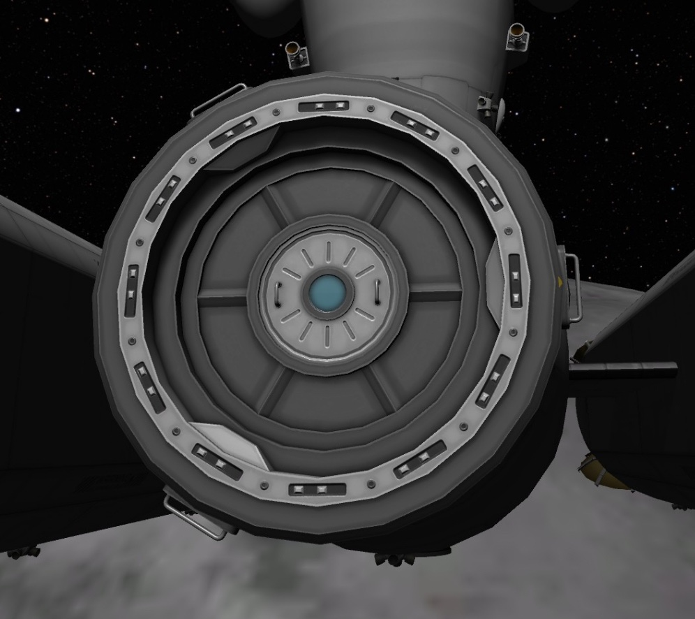

A save file fixing utility for broken docking ports in Kerbal Space Program by DanteLore
 Kerbal Space Program is one of the finest games ever to be written. But there's nothing worse after a long transfer to a distant planet than right-clicking a docking port and finding the "Undock" option has disappeared!
That's where this utility comes in handy. Follow these simple steps and you'll be back up and running in no time!
If you're interested in the code for this project, you can find it on github. If you want to get in touch I am u/DanteLore1 on Reddit or DanteLore on Twitter. You're already on my website.
Small print: This utility is provided free of charge and without warranty. The author assumes no liability for damages of any kind. You use the tool at your own risk. That said, a corrupt KSP save file is very unlikely to cause anyone any harm. Always make a backup. Please do not upload any personal data or sensitive info. If your latest rocket's name happens to be your bank account number, there is very little that can be done to secure that data. I will collect no data about you, but may keep a backup of your (anonymised) save file for dev and debugging purposes. Use of the tool constitutes acceptance of these terms.